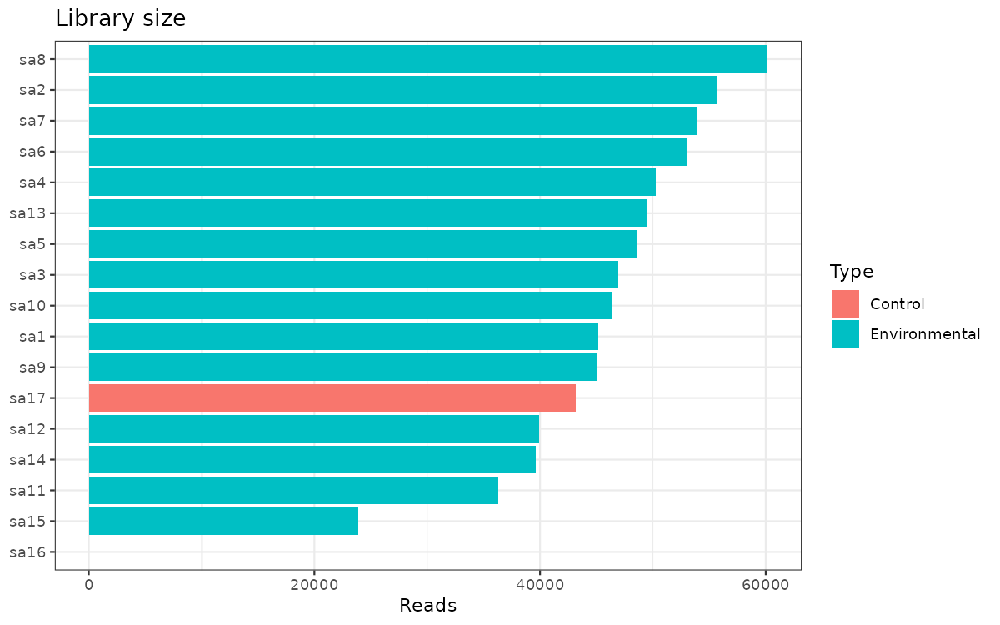
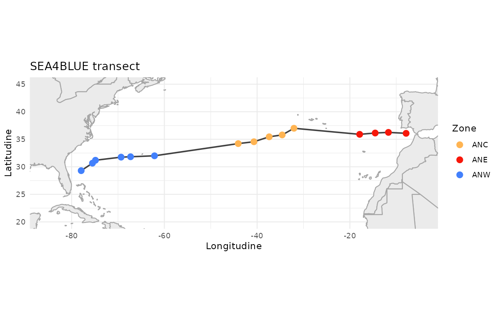
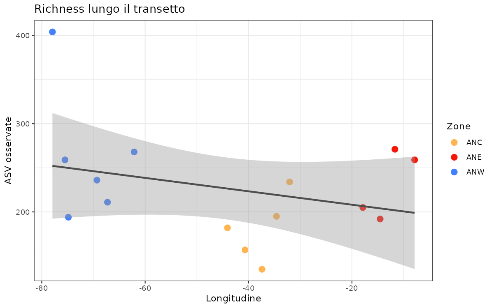
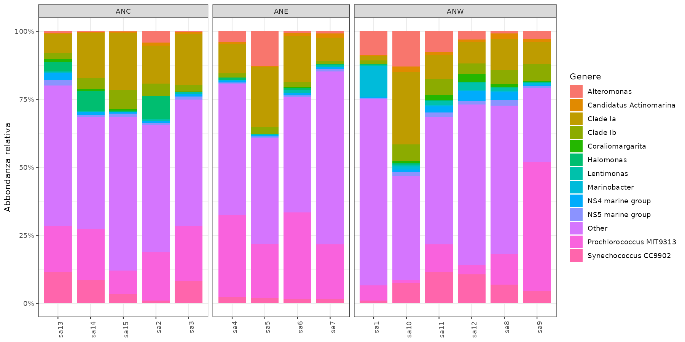
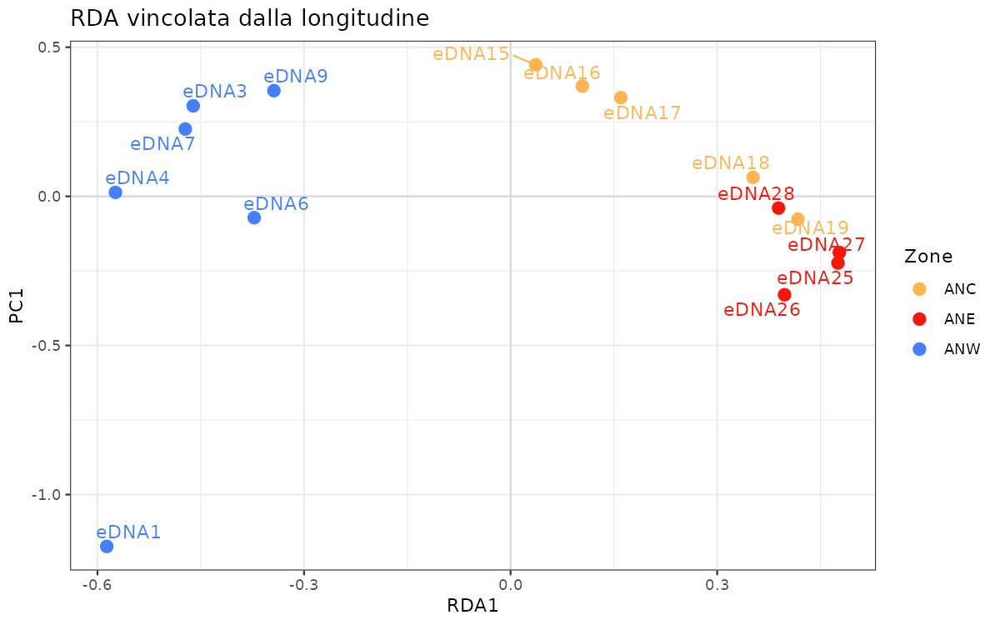

Se avete scaricato lo zip nella cartella Download della vostra home, aprite la sessione da lì con:
setwd("~/Downloads/Sea4Blue")
~ significa “home”. Se la vostra cartella si chiama Scaricati, il percorso cambia di conseguenza. L’idea e sempre la stessa: portarsi nella cartella dove avete decompresso il dataset prima di lanciare lo script.
Decomprimete lo zip.
Aprite Sea4Blue.Rproj.
Aprite analysis_guided.R.
Verificate che getwd() termini con Sea4Blue.
Unzip the archive.
Open Sea4Blue.Rproj.
Open analysis_guided.R.
Check that getwd() ends with Sea4Blue.
1. Pacchetti e dati
1. Packages and data
library(phyloseq)
Warning: package 'phyloseq' was built under R version 4.5.2
library(vegan)
Warning: package 'vegan' was built under R version 4.5.2
Loading required package: permute
library(ggplot2)
Warning: package 'ggplot2' was built under R version 4.5.2
library(dplyr)
Warning: package 'dplyr' was built under R version 4.5.2
Attaching package: 'dplyr'
The following objects are masked from 'package:stats':
filter, lag
The following objects are masked from 'package:base':
intersect, setdiff, setequal, union
library(maps)library(ggrepel)
Warning: package 'ggrepel' was built under R version 4.5.2
Fermata / Stop. Quanti campioni, quante ASV e quali ranghi tassonomici contiene l’oggetto? Individuate controllo positivo e negativo.
2. Profondita di sequenziamento
2. Sequencing depth
depth_df <-data.frame(Sample =sample_names(ps),Reads =sample_sums(ps),Type =ifelse(is.na(sample_data(ps)$Zone), "Control", "Environmental"))ggplot(depth_df, aes(x =reorder(Sample, Reads), y = Reads, fill = Type)) +geom_col() +coord_flip() +labs(x =NULL, y ="Reads", title ="Library size") +theme_bw()

I controlli vengono visualizzati insieme ai campioni ambientali per capire subito se hanno profondita anomala.
Controls are shown together with environmental samples so we can immediately spot anomalous library sizes.
Discussione / Discussion. Il negativo ha la stessa profondita dei campioni ambientali? Il positivo e un campione ambientale? Profondita elevata significa automaticamente qualita elevata?
2.1 Il transetto di campionamento
2.1 The sampling transect
Le coordinate sono metadata: prima del grafico le ordiniamo per giorno di navigazione per far leggere il gradiente spaziale in modo corretto.
Coordinates are metadata: before plotting them, we sort samples by navigation day so the spatial gradient is read correctly.
samdf <-data.frame(sample_data(subset_samples(ps, !is.na(Zone))))samdf <- samdf[order(samdf$NavigationDay), ]world <-map_data("world")ggplot() +geom_polygon(data = world,aes(x = long, y = lat, group = group),fill ="grey92", color ="grey65" ) +geom_path(data = samdf, aes(Longitude, Latitude), color ="grey25", linewidth =0.8) +geom_point(data = samdf, aes(Longitude, Latitude, color = Zone), size =3) +coord_quickmap(xlim =c(-85, -5), ylim =c(20, 45)) +scale_color_manual(values = zone_colors) +labs(x ="Longitudine", y ="Latitudine", title ="SEA4BLUE transect") +theme_minimal()

Fermata / Stop.Zone rappresenta gruppi indipendenti dalla geografia oppure segmenti dello stesso gradiente? Questa risposta sara importante quando interpreteremo PERMANOVA e RDA.
3. Curva di rarefazione
3. Rarefaction curve
Qui usiamo vegan::rarecurve sui soli campioni ambientali. E uno strumento diagnostico, non la normalizzazione finale dell’analisi.
Here we use vegan::rarecurve on environmental samples only. This is a diagnostic tool, not the final normalization for the analysis.
phyloseq-class experiment-level object
otu_table() OTU Table: [ 1219 taxa and 15 samples ]
sample_data() Sample Data: [ 15 samples by 9 sample variables ]
tax_table() Taxonomy Table: [ 1219 taxa by 6 taxonomic ranks ]
Nota
I controlli non vengono eliminati per ignorarli: prima si ispezionano per valutare contaminazione e riuscita del run, poi si escludono dal confronto ecologico tra zone.
Nota
Controls are not removed to ignore them: first we inspect them to assess contamination and run success, then we exclude them from the ecological comparison between zones.
5. Diversita alfa sui conteggi
5. Alpha diversity on counts
La richness e il numero di ASV osservate nel campione; Shannon combina richness ed evenness.
Richness is the number of observed ASVs in a sample; Shannon combines richness and evenness.
ggplot(alpha, aes(x = Longitude, y = Observed, color = Zone)) +geom_point(size =3) +geom_smooth(method ="lm", se =TRUE, color ="grey30") +scale_color_manual(values = zone_colors) +labs(x ="Longitudine", y ="ASV osservate", title ="Richness lungo il transetto") +theme_bw()

Discussione / Discussion. State descrivendo un’associazione o dimostrando un effetto causale? Profondita e posizione geografica possono essere confondenti?
Permutation test for adonis under reduced model
Permutation: free
Number of permutations: 999
adonis2(formula = bray ~ Zone, data = meta_rel, permutations = 999)
Df SumOfSqs R2 F Pr(>F)
Model 2 1.1822 0.48721 5.7006 0.001 ***
Residual 12 1.2443 0.51279
Total 14 2.4265 1.00000
---
Signif. codes: 0 '***' 0.001 '**' 0.01 '*' 0.05 '.' 0.1 ' ' 1
La PERMANOVA puo risentire di dispersioni diverse tra gruppi. Controlliamole.
PERMANOVA can be affected by different dispersions among groups. Check them.
dispersion <-betadisper(bray, group = meta_rel$Zone)anova(dispersion)
Analysis of Variance Table
Response: Distances
Df Sum Sq Mean Sq F value Pr(>F)
Groups 2 0.083249 0.041625 2.6847 0.1087
Residuals 12 0.186054 0.015504
Permutation test for homogeneity of multivariate dispersions
Permutation: free
Number of permutations: 999
Response: Distances
Df Sum Sq Mean Sq F N.Perm Pr(>F)
Groups 2 0.083249 0.041625 2.6847 999 0.09 .
Residuals 12 0.186054 0.015504
---
Signif. codes: 0 '***' 0.001 '**' 0.01 '*' 0.05 '.' 0.1 ' ' 1
Avviso
Le zone sono definite lungo lo stesso gradiente geografico. Un risultato significativo per Zone non separa automaticamente l’effetto della categoria da quello della longitudine, ne dimostra causalita.
Avviso
The zones are defined along the same geographic gradient. A significant result for Zone does not automatically separate category effects from longitude effects, and it does not demonstrate causality.
8. Composizione tassonomica
8. Taxonomic composition
Aggregare a genere rende il grafico leggibile ma perde dettaglio. Mostriamo i 12 generi complessivamente piu abbondanti e raggruppiamo gli altri.
Aggregating to genus makes the plot readable but loses detail. We show the 12 most abundant genera overall and group the rest.
ggplot(genus_plot, aes(x = Sample, y = Abundance, fill = Genus_plot)) +geom_col(width =0.85) +facet_grid(~ Zone, scales ="free_x", space ="free_x") +scale_y_continuous(labels =function(x) paste0(round(100* x), "%")) +labs(x =NULL, y ="Abbondanza relativa", fill ="Genere") +theme_bw() +theme(axis.text.x =element_text(angle =90, hjust =1))

Discussione / Discussion. Quali pattern della PCoA possono essere collegati a questo grafico?
9. RDA lungo il gradiente longitudinale
9. RDA along the longitudinal gradient
Per la RDA trasformiamo le abbondanze relative con Hellinger. Usiamo la longitudine come variabile esplicativa; la richness non viene usata come predittore perche e calcolata dalla stessa matrice biologica.
For the RDA we transform relative abundances with Hellinger. Longitude is the explanatory variable; richness is not used as a predictor because it is derived from the same biological matrix.
site_scores <-as.data.frame(scores(rda_model, display ="sites", choices =1:2))site_scores$Sample <-rownames(site_scores)site_scores <-left_join( site_scores,cbind(Sample =rownames(meta_rel), meta_rel),by ="Sample")ggplot(site_scores, aes(x = RDA1, y = PC1, color = Zone, label = SampleName)) +geom_hline(yintercept =0, color ="grey85") +geom_vline(xintercept =0, color ="grey85") +geom_point(size =3) +geom_text_repel(show.legend =FALSE) +scale_color_manual(values = zone_colors) +labs(title ="RDA vincolata dalla longitudine") +theme_bw()

10. Cosa riportare
10. What to report
Nel resoconto indicate sempre:
In the report always include:
numero iniziale e finale di campioni e ASV;
criterio di esclusione dei controlli e dei taxa;
rappresentazione o trasformazione usata in ogni analisi;
distanza e metodo di ordinamento;
formula, numero di permutazioni e controllo della dispersione per PERMANOVA;
limiti del disegno osservazionale e possibili fattori confondenti.
Nota
Se volete, il passo successivo e affiancare a questa pagina una versione compatta con il solo flusso operativo, da usare come handout durante la lezione.
Nota
If you want, the next step is to add a compact operator view of the same material, to use as a handout during the lesson.